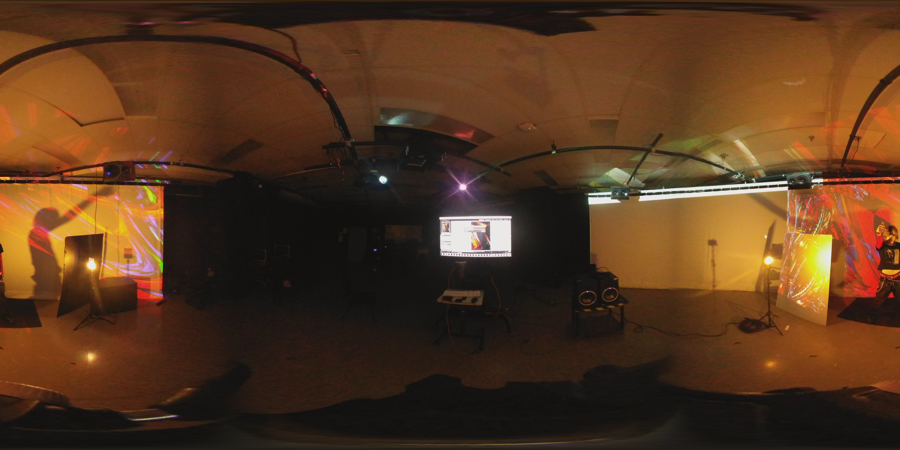

<script src="https://aframe.io/releases/0.6.1/aframe.min.js"></script>
<a-scene>
  <a-assets>
    
    <h1 style="display: none;">Easteregg</h1>
  </a-assets>
  <a-sky src="#panorama" rotation="0 -90 0"></a-sky>
</a-scene>
